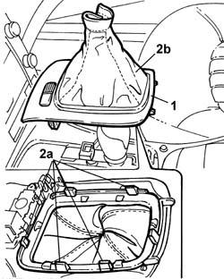

2125C26 Lever/grip TRIM - R.R. for versions with reverse gear engagement device
- Path
- Procedures > 21 GEARBOX > 2125 manual gearbox external controls > 2125C manual gearbox external control (cables) > 2125C26 Lever/grip TRIM - R.R. for versions with reverse gear engagement device
- Kind
- repair procedure (removal / refitting; the operation number is the code)
- Applies to
- engines: 2.0 TB, 2.4 20V, 2.4 JTD 10V, 2.4 JTD 20V; all production periods
- Interactive page
- https://sloeber94.github.io/elrnDB-lThss/en/#/108810
Applies to: engines: 2.0 TB, 2.4 20V, 2.4 JTD 10V, 2.4 JTD 20V; all production periods
 Removing
Removing
 Refitting
Refitting1. Release the switch holder trim complete with lever cover from the housing.
2. Remove the cover (2b) working on the tabs (2a).

Applies to: engines: 2.0 TB, 2.4 20V, 2.4 JTD 10V, 2.4 JTD 20V; all production periods
Refitting
Removing- Fit the lever trim on the surround.
- Fit the trim in the housing in the tunnel cover.